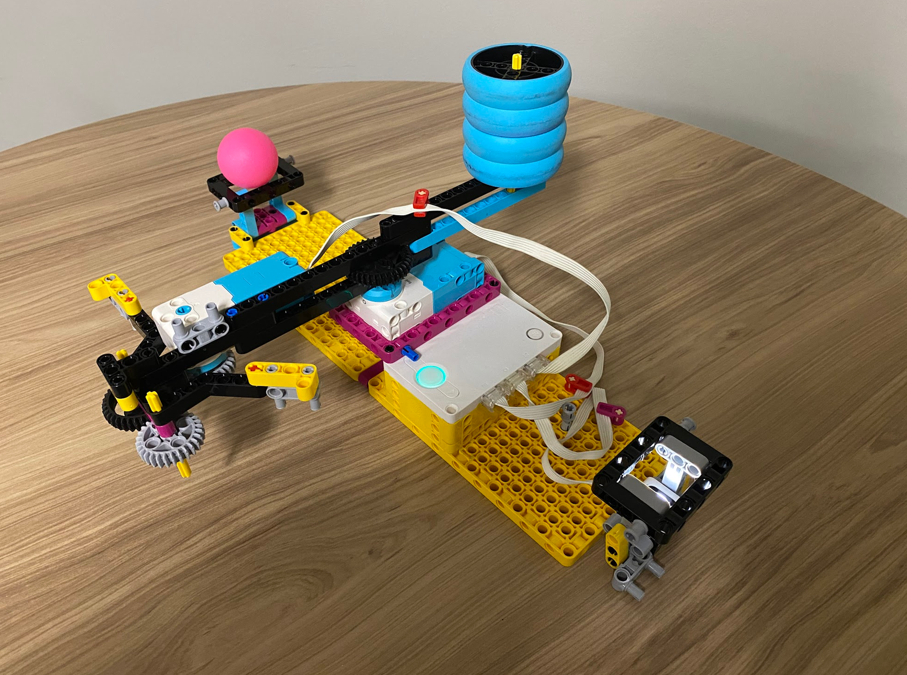
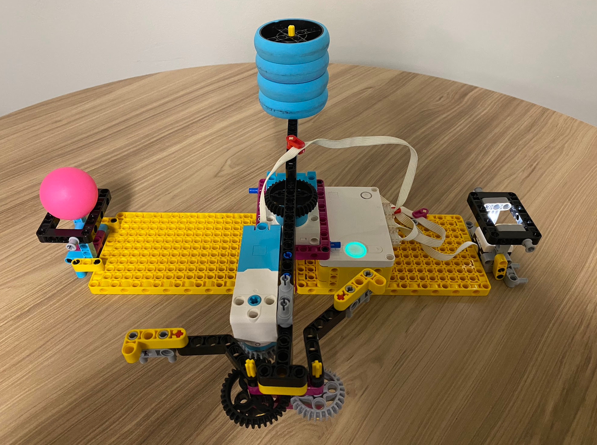
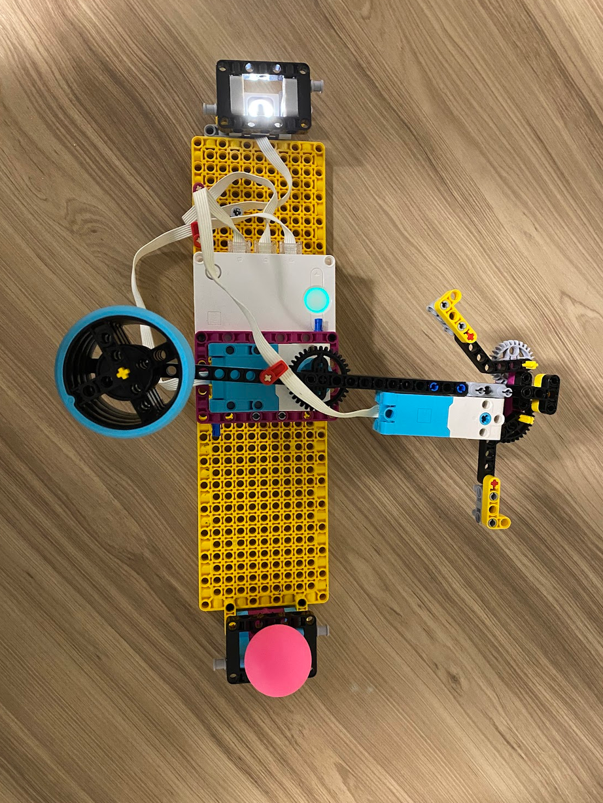

The challenge is to precisely pick up, move, and place a ping pong ball. The brief highlights stability and repeatability as engineering considerations, along with the order and precision of the robot's movements.


I chose to make a claw attached to an arm that grips the ball. The arm rotates 180 degrees to move it to the drop-off location. I made the arm start and end away from that location so it would not interrupt other arms when connected in series.
The code waits for the color sensor to detect a color, then moves motors F and B through a timed sequence to operate the arm and claw. It waits for the sensor to clear before checking for another trigger.
# Setup: Color Sensor on port D; motors on ports B and F.
from hub import port
import runloop
import motor
import color
import color_sensor
async def main():
# Keep checking for a recognized color.
while True:
if color_sensor.color(port.D) != color.UNKNOWN:
# Wait 1 second, then turn motor F backward by 90 degrees.
await runloop.sleep_ms(3000)
await motor.run_for_degrees(port.F, -100, 360)
# Wait 1 second, then turn motor B backward by 180 degrees at half speed.
await runloop.sleep_ms(1000)
await motor.run_for_degrees(port.B, -180, 180)
# Wait 1 second, then turn motor F forward by 205 degrees.
await runloop.sleep_ms(1000)
await motor.run_for_degrees(port.F, 205, 360)
# Keep the existing 2-second wait before returning motor B.
await runloop.sleep_ms(2000)
# Wait 1 second, then return motor B by 180 degrees at half speed.
await runloop.sleep_ms(1000)
await motor.run_for_degrees(port.B, 180, 180)
# Wait 1 second, then finish by turning motor F backward by 90 degrees.
await runloop.sleep_ms(1000)
await motor.run_for_degrees(port.F, -100, 360)
# Wait until the sensor no longer detects a color.
while color_sensor.color(port.D) != color.UNKNOWN:
await runloop.sleep_ms(50)
# Pause briefly before checking the sensor again.
await runloop.sleep_ms(50)
runloop.run(main())